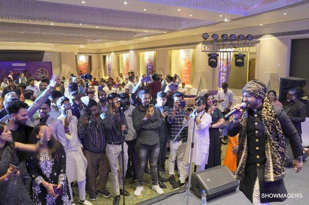

Home · Blog · Best Corporate Event Planners in Delhi NCR
Best Corporate Event Planners in Delhi NCR

What is Corporate Event Planning?
The process of organizing events for a brand or business to achieve business objectives is known as corporate event planning. This includes corporate functions like conferences, seminars, exhibitions, and workshops. These are occasions that assume a fundamental part in uniting individuals to share information and cultivate associations that in the end drive business development. The best corporate event planners in Delhi NCR are also responsible for managing team-building activities as well as charity events. Companies can network with potential investors and business partners, showcase their products or services, increase brand awareness, and reward their employees at corporate events. Besides, facilitating corporate occasions can assist a business with fostering its standing as an idea chief in its industry.
What Services Best Corporate Event Planners in Delhi NCR Offers?
Conferences and Seminars:
A conference is a bigger scope occasion that frequently ranges several days and incorporates a different scope of meetings, studios, and introductions. It normally obliges a more critical number of members and spotlights on more extensive subjects or industry topics. Then again, a seminar is a more engaged and private assembling that spins around a particular theme or subject. It for the most part goes on for a more limited span, normally a couple of hours or a solitary day, and includes inside and out conversations, introductions, and collaborations among a smaller gathering of participants. As a corporate event organizing company in Delhi NCR, India our association is pleasantly renowned organization and renders the contributions at truly reasonable expenses. We are known as the top corporate event organizer in Delhi, India, due to our success as conference and seminar organizers.
Brand activation and Product launches:
Brand activation and product launches are one more typical sort of occasion. A product launch event is held when a company introduces a new product or service to target audiences to raise awareness and generate excitement. A marketing strategy called “brand activations” aims to bring a brand’s identity to life and get its target audience involved in experiences and interactions. Presentations, demonstrations, and coverage by the media are all examples of these events. Showmaqers offer different brand activating projects, special exercises and recreation bundles administrations at a reasonable charge range.
Corporate galas and Dinners:
Important events like corporate gala dinners bring together professionals, clients, and stakeholders to celebrate accomplishments, foster opportunities for networking, and improve the brand’s image. Our professional team will ensure that a successful gala dinner is planned and carried out with meticulous organization and attention to detail. Showmaqers is one of the best corporate event management company in Delhi, Gurgaon, and the NCR. We take care of everything necessary to plan and manage an impactful Gala Dinner Event if you are looking for an experienced and effective gala night events or gala dinner event organizer in Delhi, NCR, or anywhere else in India.
Trade shows and Exhibitions:
A trade show serve as a stage for organizations to advance their brands, construct associations with likely clients, produce leads, and remain refreshed on industry patterns. They provide an excellent opportunity for networking, conducting market research, and increasing visibility in their sector. Career expos likewise frequently include instructive meetings, classes, and item showings, further upgrading industry information and encouraging business development.
Charity events:
Charity events are becoming more and more popular on daily basis, and a lot of well-known companies and businesses are opting for them to help those who need a little encouragement to do something good for the world that is struggling. It is a truly incredible thing and can carry a ton of positive advantages to your organization name. It may also result in numerous positive business returns, as well as supporting and contributing to numerous charities. It makes an organization look like a business that cares about the community; assists make it withstand apart as a decent boss and can widely affect supporting a culture of collaboration and fortitude.
Why Showmaqers?
Showmaqers is here to assist you with corporate events that will ultimately benefit your company. Showmaqers maintains a favourable reputation among customers for providing satisfying services by providing corporate venues for a variety of corporate events. For various events like conference, product launch, brand activation, charity or seminar, you can track down the ideal venue with us. Whether you want an exceptional banquet hall or an open garden space, our corporate venues satisfy your necessities. The Lavish Inns and Resorts across India takes care of your necessities giving all that you want to make your occasion fruitful. For best corporate event planner services in Delhi NCR, Contact us Now!